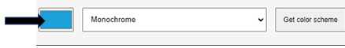
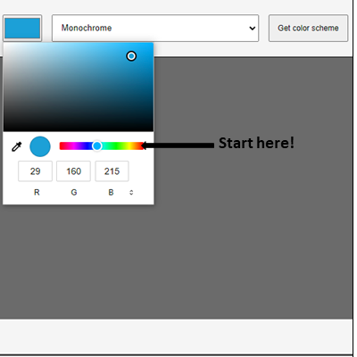
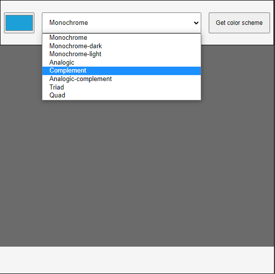
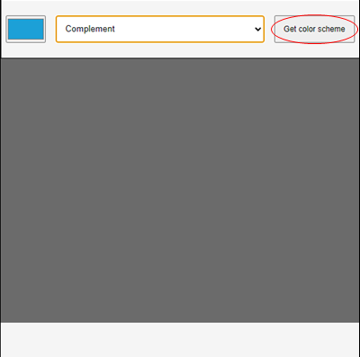
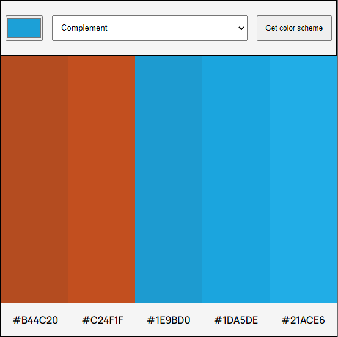

1.
Click on the color box where the arrow is to get started
2.
Start with the color bar to find your color then use the color area above it
to help find the perfect shade of said color.
3.
Once you found your color, click on the drop down menu and choose a scheme.
Let's go with "Complement" for this example
4.
Click the "Get color scheme" button and....
5.
Your assorment of colors and there respective hex values for the taking.
Please enjoy, thank you!